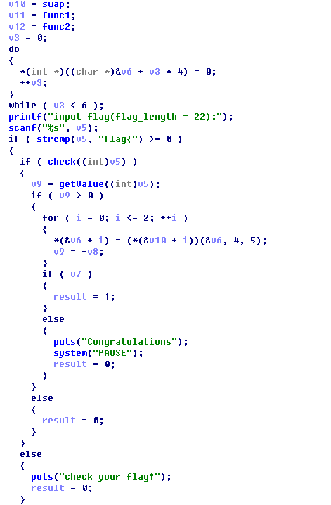
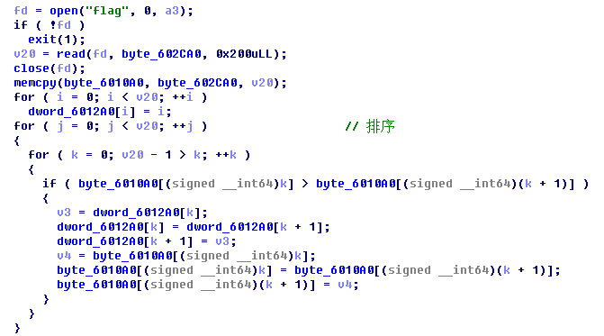
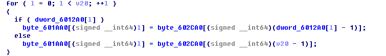
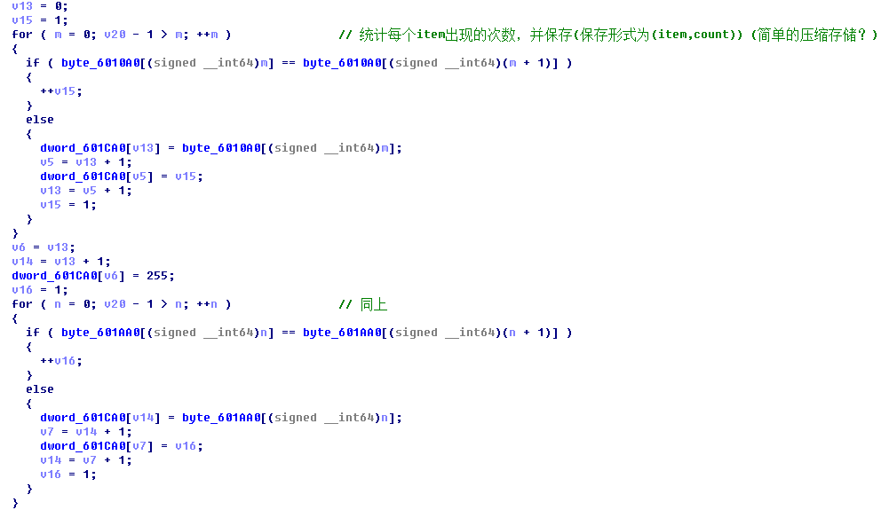

re1 使用file命令查看文件类型，如下:
1 2 $ file re1.exe re1.exe: PE32 executable (console) Intel 80386, for MS Windows
运行该程序，提示输入flag，随机输入内容后程序退出。
利用IDA Pro加载程序进行分析，main()函数的主要逻辑如下：读取输入的flag(长度为22)，然后对flag内容进行一系列判断，如strcmp()、check()以及调用v10、v11和v12指向的函数等。

对上述函数的进行简单分析后，感觉可以直接利用angr框架编写脚本进行求解，如下。其中，通过对scanf()函数进行hook，然后直接在对应的内存地址空间写入符号值，当然也可以采用其他方式。运行后即可得到flag。
1 2 3 4 5 6 7 8 9 10 11 12 13 14 15 16 17 18 19 20 21 22 23 24 25 26 27 28 29 30 31 32 33 34 35 36 37 38 39 40 41 42 import angrfrom angr.procedures.stubs.format_parser import FormatParserclass MyScanf (FormatParser ): def run (self,fmt ): addr = self.state.solver.eval (self.arg(1 )) print("input flag addr: %#x" % addr) self.state.memory.store(addr, self.state.solver.BVV(b'f' ,8 ), endness=self.state.arch.memory_endness) self.state.memory.store(addr+1 , self.state.solver.BVV(b'l' ,8 ), endness=self.state.arch.memory_endness) self.state.memory.store(addr+2 , self.state.solver.BVV(b'a' ,8 ), endness=self.state.arch.memory_endness) self.state.memory.store(addr+3 , self.state.solver.BVV(b'g' ,8 ), endness=self.state.arch.memory_endness) self.state.memory.store(addr+4 , self.state.solver.BVV(b'{' ,8 ), endness=self.state.arch.memory_endness) self.state.memory.store(addr+21 , self.state.solver.BVV(b'}' ,8 ), endness=self.state.arch.memory_endness) for i in range (5 ,20 ): self.state.memory.store(addr+i, self.state.solver.BVS('a%d' % i, 8 ), endness=self.state.arch.memory_endness) project= angr.Project('./re1.exe' , load_options={'auto_load_libs' :False }) start_address = 0x401684 find_address = 0x4017a3 avoid_address = (0x40171b , 0x401749 , 0x4017c2 ) project.hook_symbol('scanf' , MyScanf()) state=project.factory.blank_state(addr=start_address, add_options={angr.options.LAZY_SOLVES}) simgr = project.factory.simulation_manager(state) simgr.explore(find=find_address, avoid=avoid_address) if simgr.found: find_state = simgr.found[0 ] sp_value = find_state.solver.eval (find_state.regs._sp) input_addr = sp_value + 0x11 print("input flag addr: %#x" % input_addr) for i in range (5 ,20 ): value = find_state.memory.load(input_addr+i, 1 ) find_state.add_constraints(value>=48 , value <=127 ) flag = [find_state.solver.eval (find_state.memory.load(input_addr+i, 1 )) for i in range (22 )] print('' .join(map (chr , flag)))
对于输入内容的约束，既可以在写入符号值时添加，也可以在最后求解时添加。如果在写入符号值时添加约束，当符号表达式过于复杂时，可能会造成约束求解器超时，需要调整solver的超时时间。这里采取后面一种方式，同时添加了angr.options.LAZY_SOLVES选项。
re2 题目分析 使用file命令查看文件类型，如下。运行程序，提示”Segmentation fault (core dumped)”。
1 2 $ file re2 re2: ELF 64-bit LSB executable, x86-64, version 1 (SYSV), dynamically linked, interpreter /lib64/ld-linux-x86-64.so.2, for GNU/Linux 2.6.32, BuildID[sha1]=c8c5efd9f0afc405b126a0621ce63a9daccad23b, stripped
使用IDA Pro加载程序进行分析，main()函数的主要处理流程如下：
读取flag文件的内容，并保存在byte_602ca0和byte_6010a0中 对byte_6010a0中的内容进行排序(从小到大)，同时记录下标的变化 根据byte_602ca0和下标数组dword_6012a0对byte_601aa0进行初始化 统计byte_6010a0中每个item出现的次数，并将结果保存于dword_601ca0中(保存形式为(item,count)) 对byte_601aa0进行同样的操作，将结果保存于dword_601ca0中 将dword_601ca0的内容写入flag_enc文件 解题思路 现在是要根据flag_enc文件的内容求出原始flag文件的内容。根据main()函数的处理逻辑，由flag_enc文件可以得到排序后的数组byte_6010a0、byte_601aa0，那么如何得到排序前的数组byte_6010a0呢？
下面用一个简单的例子来说明整个过程，如下。
思路1 以上面的例子为例，排序的过程相当于是对矩阵$A$和$B$分别进行了变换，即存在一个初等矩阵$Y$，使得
思路2 同样，以上面的例子为例，由$C=A(B^{‘})$可知，$C$中的元素和$A^{‘}$中的元素存在一定的对应关系，即$A^{‘}$中的元素在原始$A$中的前一个元素就是$C$中相同下标处的元素，如$A^{‘}[8]$=‘g’，其在$A$中的前一个元素为‘f’，正好对应$C[8]$。因此根据$C$和$A$，可以得到原始$A$中的一些相邻两个元素的序列片段，如下。
因此，只需要将所有的序列判断“串”起来，就可以得到原始的$A$了。那么如何“串”起来呢？
由于$A^{‘}$是经过排序的，所以在所有的序列片段中，以相同字母结尾的序列片段是存在一定的先后顺序关系的。以‘be’ 和‘ge’为例，在一个正确的序列中，必须先出现序列片段‘be’，再出现序列片段‘ge’。“串”序列的示例如下。
其中，在序列1中，只包含4个序列片段，得到了原始$A$的一部分内容。需要说明是，在序列片段‘fg’之后，之所以没有继续“串”序列片段‘ge’，是因为已有的序列中并没有出现序列片段‘be’，根据序列片段的先后关系，所以不能“串”序列片段‘ge’。在序列2中，包含了全部的9个序列片段，得到原始的$A$。
因此，根据该思路，可以采用深度搜索算法来枚举可能的序列，找到一个能够包含所有的片段的序列即可。
1 2 3 4 5 6 7 8 9 10 11 12 13 14 15 16 17 18 19 20 21 22 23 24 25 26 27 28 29 30 31 32 33 34 35 36 37 38 39 40 41 42 43 44 45 46 47 48 49 50 51 52 53 54 55 56 57 58 59 60 from collections import defaultdictimport copywith open ('./flag_enc' , 'rb' ) as f: dword_601ca0 = f.read() byte_6010a0_sorted = [] byte_601aa0 = [] index = 0 while index < len (dword_601ca0): value = dword_601ca0[index:index+4 ] count = dword_601ca0[index+4 :index+8 ] if value[0 ] != '\xff' : byte_6010a0_sorted.extend([value[0 ]] * ord (count[0 ])) index += 8 else : break index += 4 while index < len (dword_601ca0): value = dword_601ca0[index:index+4 ] count = dword_601ca0[index+4 :index+8 ] byte_601aa0.extend([value[0 ]] * ord (count[0 ])) index += 8 byte_601aa0.append('_' ) char_dict = defaultdict(list ) for index in xrange(len (byte_6010a0_sorted)): char_dict[byte_6010a0_sorted[index]].append(byte_601aa0[index]) def dfs (nextc, key_index, total_char, flags ): key_index = copy.deepcopy(key_index) if total_char == len (byte_6010a0_sorted): print flags return True for key in key_index: if key_index[key] == len (char_dict[key]): continue if char_dict[key][key_index[key]] == nextc: key_index[key] += 1 if dfs(key, key_index, total_char+1 , flags+key): return True key_index[key] -= 1 return False key_index = {} for item in char_dict: key_index[item] = 0 for key in key_index: dfs(key, key_index, 0 , '' )
附件下载 题目及相关脚本